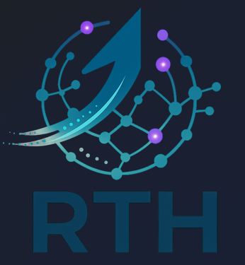

We introduce RTH-LM, a Fractal Gated Causal Temporal Convolutional Network (TCN) for language modeling, designed as an alternative to attention-centric architectures. RTH-LM targets linear-time inference in sequence length and improved data/compute efficiency under constrained training regimes. The model family is organized around a modular separation between a compact shared frozen core (the Genome) and trainable low-rank adapters (the Soul), enabling rapid domain specialization with minimal update artifacts.
This paper presents: (i) the Fractal TCN backbone and scaling strategy, (ii) the Genome/Soul modular deployment design, and (iii) initial training signals showing stable convergence under deliberately restricted data. We also provide a conservative hardware feasibility analysis indicating that a 120B-parameter scaled variant—deployed with 2-bit weight-only quantization—can fit on 80GB-class GPUs, depending on runtime state and inference-engine overhead. Finally, we outline a practical pathway to a 1T-parameter vision using a compact 8–9× H100 80GB cluster for sharded inference and incremental expansion workflows.
Transformer architectures dominate modern language modeling, but their operational profile often becomes the limiting factor in real deployments: quadratic attention costs, high memory pressure at long context, and a prevailing reliance on extremely large pretraining corpora. These constraints raise barriers for independent research groups and small companies, and they increase energy requirements at scale.
RTH-LM explores a different axis of scaling: architectural structure over brute-force data scaling. The core hypothesis is that long-range dependency modeling can be achieved using deep causal temporal convolutions combined with gating and a fractal block expansion strategy, reducing reliance on explicit attention mechanisms.
This paper focuses on feasibility, training stability, and modular deployment design. It does not claim parity with frontier-scale instruction-tuned Transformer systems trained on trillions of tokens. Instead, it addresses: How far can capacity and usability be pushed under tight data/compute constraints using a non-attention backbone?
Attention provides flexible token-to-token routing but incurs costs that become dominant at long context and high-throughput serving. Many real-world deployments are constrained not by FLOPs alone but by memory bandwidth, allocator fragmentation, and context-state growth. RTH-LM aims to reduce these constraints using temporal mixing via convolution and gating, relying on depth/dilation schedules rather than all-pairs interactions.
Causal dilated convolutions can cover long receptive fields using dilation schedules. With sufficient depth, the model can integrate information across large contexts with predictable compute, which is attractive for streaming and on-premises inference.
RTH-LM consists of: (i) tokenizer/embeddings, (ii) a Fractal Gated Causal TCN backbone, (iii) an output head, and (iv) optional modular adapters (the Soul) for domain specialization. The backbone is organized as a stack of Fractal Blocks, each composed of multiple gated causal convolutional layers with residual pathways and normalization.
Let x ∈ ℝT × d be the sequence representation. Each layer performs:
The fractal property refers to a scalable block composition strategy:
RTH-LM defines a compact shared core parameter artifact called the Genome, reused across instances. In the reference configuration motivating this paper, the Genome is engineered to be storage-efficient (single-digit GB class depending on serialization and quantization).
Domain adaptation is performed via trainable low-rank adapters, called the Soul. Souls are small relative to the full model footprint and can be swapped to change domain behavior (coding, technical writing, creative) without full retraining.
RTH-LM is trained using autoregressive next-token prediction:
Training is intentionally constrained to emphasize architectural learning dynamics:
At the end of the referenced constrained-regime run, we report the following training snapshot:
These values are reported as an empirical training signal for feasibility; broader generalization evaluation is outlined in Appendix A.
To contextualize RTH-LM, we provide a practical comparison against an “economical” Transformer baseline, focusing on deployment scaling drivers: context-state growth, long-context overhead, and planning-grade cost/time implications.
| Dimension | Economical Transformer (typical) | RTH-LM (Fractal TCN) |
|---|---|---|
| Long-context memory | KV cache grows with context and layers; often FP16/BF16 | No classical KV cache; runtime state can be engineered as streaming buffers |
| Inference scaling | Full attention can be O(N2); optimized variants mitigate | Backbone compute designed for linear-time in sequence length |
| Domain adaptation | Full fine-tune costly; adapters common (LoRA) | Genome/Soul split: compact Souls enable fast specialization |
| Evidence under small data | Small data often insufficient for broad generality | Stable snapshot at 15k steps (loss ≈ 1.0, ppl ≈ 2.8) |
Idealized raw size:
Conservative planning range: Weights (2-bit, weight-only): ∼30–36 GB VRAM (implementation-dependent).
For conservative comparison, we report a Transformer-style KV-cache equivalent (FP16) upper bound under reference assumptions L = 36, Gkv = 8, dh = 64. FP16 uses 2 bytes per element:
KV-equivalent state (upper bound): 8k ∼0.59 GB; 32k ∼2.36 GB; 128k ∼9.44 GB.
Total (128k, batch=1): ∼45–57 GB VRAM (weights + upper-bound state + runtime overhead). This is compatible with 80GB-class GPUs (H100/A100 class), subject to engine details.
A 1T-parameter model quantized to 2-bit weight-only has raw size:
We report a conservative range of ∼250–300 GB for weights across GPUs. While 4 × 80GB is the theoretical minimum for weights-only, production inference benefits from 6 × H100 80GB as a baseline (weights + overhead + long-context state), and 8–9 GPUs for throughput, replicas, and multi-tenant Soul serving, subject to engine implementation and sharding strategy.
Minimal reviewer-proof evidence bundle:
Replication/mirroring of block groups followed by re-initialization of only stabilization parameters (norm gains, routing scalars, minimal mixing coefficients) and a short stabilization run. Adapter training (Souls) performs domain specialization while keeping the expanded Genome stable for deployment.
Commit hash + environment; tokenizer hash; dataset manifest + split IDs; full training config (seq, batch, optimizer, LR schedule); logs (step-time, loss, ppl, memory) and checkpoint hashes.
De Luca, C. Q. (2026). RTH-LM: A Fractal Temporal Convolutional Language Model. RTH Italia. Repository: https://github.com/rthgit/ZetaGrid
info@rthitalia.com | RTH Italia